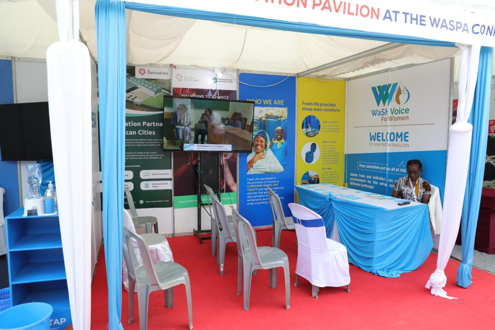

From inception to authority: WaSHVoice Africa's unwavering commitment to inclusive governance and systemic impact across Kenya's WaSH landscape.
Explore Our Foundation
WaSHVoice (Water, Sanitation and Hygiene Voice for Women) is committed to bringing social change through training, improving facilities, and protecting the environment for future generations.
Founded in 2018, WaSHVoice has evolved from a nascent social enterprise into a pivotal force in Kenya's WaSH landscape. Headquartered in Nairobi, we operate purposefully at the intersection of advocacy, sector coordination, and climate action to dismantle traditional service silos.
We believe the "WaSH Crisis" is fundamentally a failure of equity and governance. WaSHVoice strengthens the voice of the vulnerable, connecting diverse knowledge in strategic management and accountability for human health, dignity, and ecological footprint.

Capacity Building

Facility Projects

Stakeholder Engagement
The guiding principles that drive our relentless pursuit of WaSH justice across the region.
"A world where every individual has the power to influence the WaSH services defining their health and dignity."
To bridge the gap between policy and people through evidence-based advocacy, climate-smart innovation, and the relentless pursuit of WaSH justice.
Anchoring Kenya's WaSH crisis in equity, evidence-based governance, and ecological stewardship.
Drive accountability to transform access into just, inclusive, and rights-based service delivery models.
Cultivate expert leadership and proficiency to design and manage resilient infrastructure systems.
Leverage data-driven insights to challenge legacy systems and catalyze high-level policy shifts.
Safeguard ecological footprints by transitioning to circular and climate-smart sanitation technologies.
Radical accountability and evidence guide our relentless pursuit of long-term sustainable success.
Using data-driven insights to challenge "business as usual" and ensure every intervention translates into tangible progress and high ROI.
Integrating ecological safeguards and human capital investment to ensure our infrastructural impact persists across generations and climate volatility.